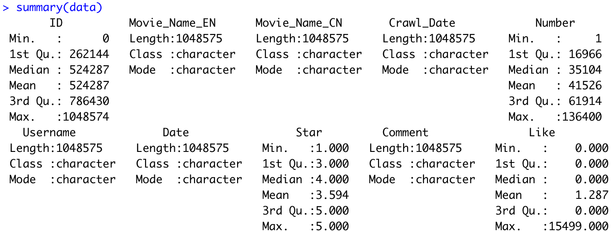
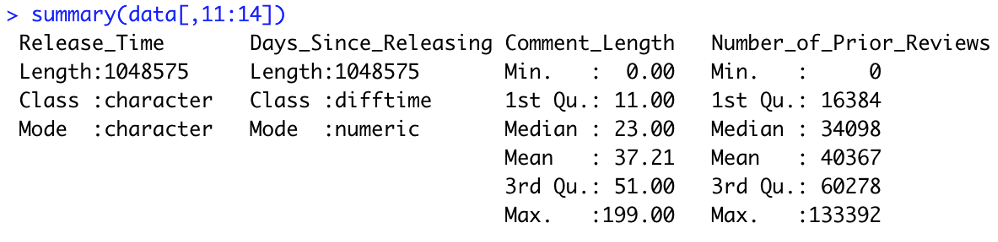
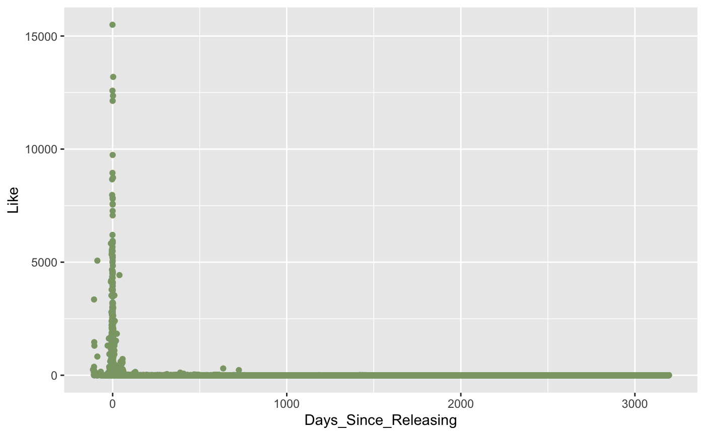
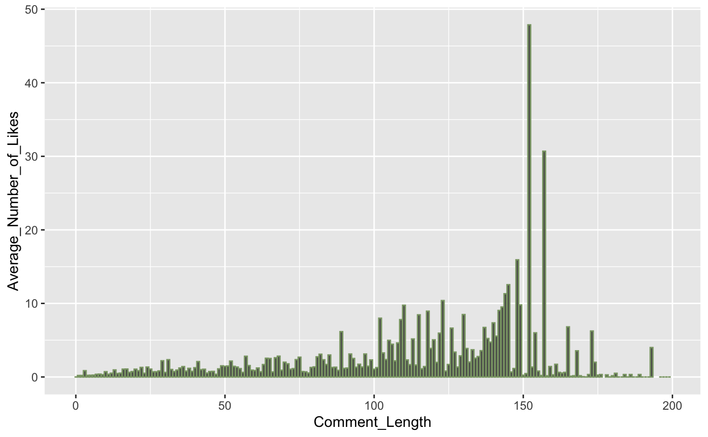
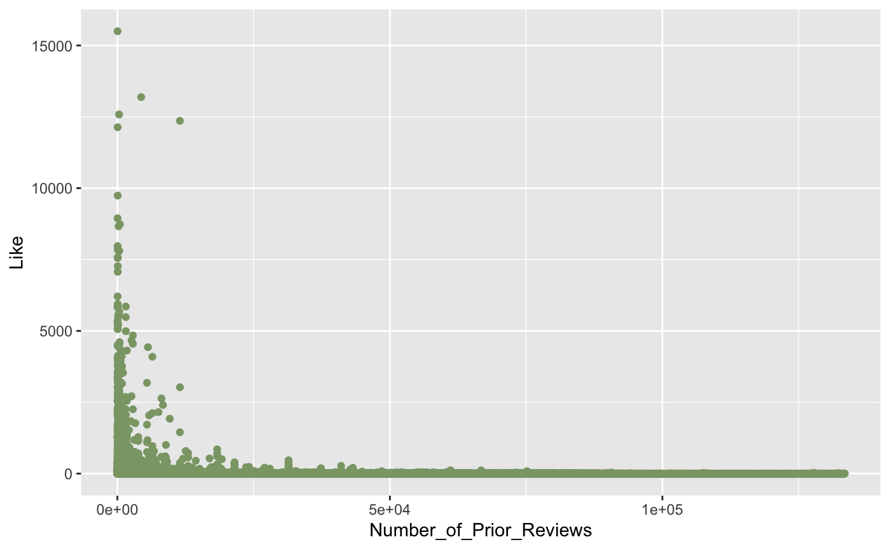
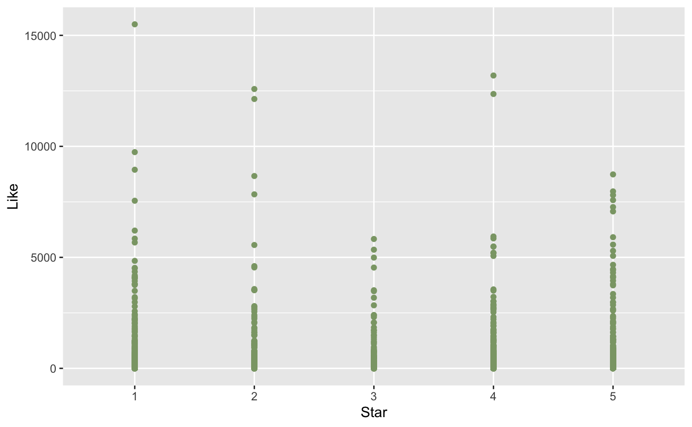
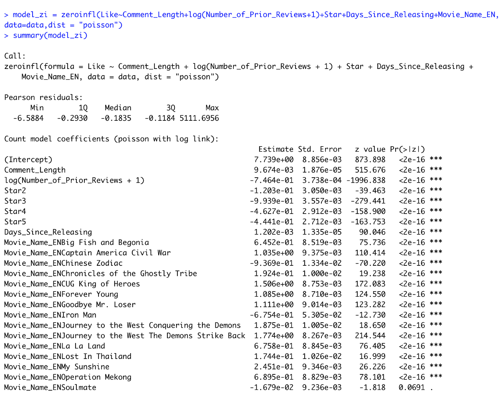
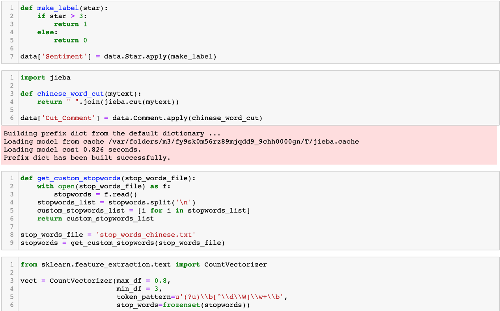
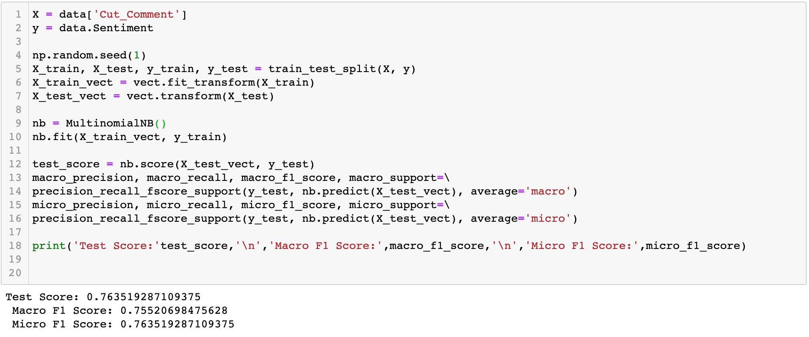

Analysis of Movie Reviews on Douban.com
Every time before I go to a movie, I will check the ratings and reviews of them online. It not only happens to me, but research shows that 91% of people regularly or occasionally read online movie reviews, and 84% trust them.
The popularity of online movie reviews encourages many people to generate comments and share their watching experiences. However, when I scraped all the movie reviews for 16 movies from Douban, a Chinese version of IMDB, I found that on average, each movie has about 65,000 reviews, and each review contains about 37 words. The large volume of movie reviews makes it quite hard for users to go through all of them. Under this circumstance, what should we pay attention to when writing movie reviews so our comments can stand out?
Data Preprocessing
In the Douban community, users write their movie reviews, then everyone else has access to them and can click the like button if they do like them. In this case, movie reviews receiving more likes can be defined as more popular ones.
The data scraped from the Douban website contains the Chinese name and English name of the movie, the date when the data was crawled, the username of people who wrote reviews, the comment (movie reviews) they generated, the star they gave for the movie, the date they wrote their reviews as well as the number of likes they received from other users. 
Before we dive into the exploration analysis of the dataset, I would like to create some new features that may have an impact on the popularity of the movie reviews, in other words, the number of likes the movie reviews receive. According to my experience, the more information the movie reviews provide, the more helpful it will be for users to make decisions. Additionally, different attitudes of movie reviews may resonate differently with the audience, thus leading to the difference in popularity. What’s more, when writing the review, the choice of movies may also lead to an impact on popularity. Based on these hypotheses, I added some new features such as the length of the review, the duration between the time when the movie is released and the time when the review is written as well as the number of prior reviews. 
Exploratory Data Analysis
From the scatter plot, we can find that the closer the time when writing a movie review is to the time when releasing the movie, the review is more likely to get a large number of likes. It is quite reasonable because when the movie is just released, it will get much attention, thus leading to its reviews going popular. However, what’s interesting is that if you have early access to the movie or the scripts and write reviews before the movie is released, the review is more likely to be popular. 
From the bar plot, it is not hard to notice that the longer the movie review is, the larger number of likes it will get. It is also not hard to understand since the longer the review is, the more information it will provide, thus it will get more recognition. However, when the length exceeds around 150 words, the popularity will decrease as the length increases. It can also be explained that the movie review becomes more time-consuming and harder to understand when it is too long, so people may not be able to finish reading and find it helpful. 
Next, I looked at the relationship between the number of prior reviews and the number of likes this review received. The scatter plot below showed that the fewer prior reviews there are, the review is more likely to receive a larger number of likes. It indicates that the review is more likely to be popular if it appears shortly after the movie is released or is written for those that have very few reviews because there are fewer ones to compete for attention. 
According to my experience, when I search for movie reviews online, I want to look at the movie reviews that praise or criticize the movie because those will help me make decisions quicker. The scatter plot below showed that movie reviews with an extreme attitude are more likely to gain a greater number of likes, those reviews may attract people with the same attitude. What’s more, the negative review is more likely to go popular compared with positive review. 
After looking at those visualizations, I had a better understanding of the relationships between those features and popularity. To make sure those relationships are robust, I ran a zero-inflated regression while controlling the movie to eliminate the impact brought by type or quality of different movies. Zero-inflated regression is used to model count data that has an excess of zero counts. The result still verified the relationships we explored above after we considered the impact introduced by the movies. 
Predicting the Attitude of Movie Reviews Using Sentiment Analysis
Looking at the regression results above, it is not hard to find that the relationship between the reviews’ attitudes and the popularity is statistically significant and the most important among all features. In this situation, the star gave by the reviewer indicated the attitude of their reviews. However, on some platforms, users may not be able to rate the movie but only express their ideas using texts. So predicting the attitude of movie reviews will help the platform identify potentially popular content and leverage the content to attract more attention and traffic.
Here I didn’t use a third library called snownlp, which can directly analyze the Chinese text emotionally. The accuracy is not particularly ideal (0.69), and this method is not so pertinent to the movie review context. So I decided to train a predictive model using Star as the target variable in this scenario.
The first step in data preparation is to transform the target variable into a binary variable, here I categorized 4, 5 stars as positive and labeled them as 1 otherwise as negative and labeled them as 0.
Then I used jieba library to participle Chinese comment and a method called CountVectorizer() provided by Sklearn to create the word vector. 
After all the preparation steps, I trained a Multinomial Naive Bayes model which is computationally efficient, easy to implement and frequently used in text classification problems on the data. Here is the performance of the model: 
The model is trained under the context of movies, so it has better performance than the model built in the third-party library. Using this model, we can predict the attitude of any comments about movies to help service platforms as well as social media platforms to identify traffic and attract attentions. What’s more, it can also help producers know the overall attitudes of the market as well as the key points consumers care about to provide insights for further strategies.